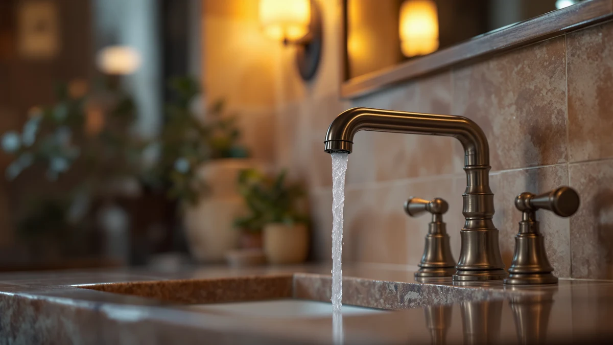

Bathroom Faucets Moen vs Delta: Which Is Better? (2026)
Prices and picks verified as of September 2026. Independent, reader-supported reviews.


Things to Know Before You Buy
- Moen and Delta both back their bathroom faucets with limited lifetime warranties on the finish and mechanism, so warranty length alone will not settle the decision.
- Delta's models in this comparison run close to $200, while Moen's lineup spans $50.99 to $87.12, a gap that matters more than brand loyalty for most remodel budgets.
- Spot-resist and brushed finishes from both brands hide fingerprints better than polished chrome, but they still need occasional wiping in hard water areas.
- Single-handle faucets install faster than widespread two-handle sets regardless of brand, so check your existing hole configuration before you buy.
- Ceramic disc valves, standard on nearly every current Moen and Delta bathroom faucet, are the main reason both brands rarely drip within the first several years.
Choosing between bathroom faucets Moen vs Delta usually comes down to how much you want to spend and whether you trust one brand's finish over the other's, since both companies build their faucets to the same U.S. plumbing standards and back them with similar warranties. Delta leans into higher-end finishes and pull-down styling borrowed from its kitchen lines, while Moen spreads its lineup across more price points, from budget single-handle faucets under $60 to mid-range widespread sets near $90.
This guide compares the two brands using the models above: two Delta faucets in the $200 range and five Moen faucets between $51 and $87, based on their listed specs, finishes and verified buyer reviews. We did not test these faucets in a lab. We compared manufacturer specifications, warranty terms and patterns across hundreds of verified owner reviews to show where each brand earns its price and where it does not.
Quick Answer
For most bathrooms, Moen wins on value: its faucets in this lineup cost $50.99 to $87.12, and reviewers report the same drip-free reliability as Delta's pricier models. Delta earns its higher price when you want a specific finish, like brushed gold, or a pull-down spout style Moen does not offer in this range. If budget is the deciding factor, start with the Moen Idora at $50.99.
What is Bathroom Faucets Moen?
Moen is a Michigan-based fixture maker owned by Fortune Brands Innovations, and its bathroom faucets make up one of the largest lineups on the market, from builder-grade models under $40 to designer sets over $300. The five Moen faucets in this comparison, the Idora, Wellton, Beric, Karis and Halle, all use Moen's Spot Resist Brushed Nickel or Nickel finishes, a coating designed to hide water spots and fingerprints between cleanings rather than eliminate them entirely.
Every model here runs on a ceramic disc valve, the same core mechanism Moen puts in faucets three times the price, which is why cheaper Moen faucets rarely feel noticeably worse in daily use than expensive ones. The differences across this lineup show up mostly in spout height, handle style and finish name, not in the valve doing the actual work.
Moen backs its faucets with a limited lifetime warranty covering both the finish and the mechanical parts for as long as the original buyer owns the home. Reviewers researching these five models consistently mention easy installation with standard connections and finishes that hold up over years of daily wiping, though a few note the brushed texture shows water spots faster than polished chrome in hard water regions.
What is Delta?
Delta Faucet Company, based in Indianapolis and owned by Masco, built its reputation on kitchen faucets before expanding into bathroom vanities, and that kitchen background shows in the Broadmoor Pull Down included in this comparison. A pull-down spout is unusual on a bathroom sink, but Delta markets it toward vanities that double as a wash station for larger items, where extra reach matters more than a compact footprint.
The Delta Nicoli, the second model here, takes a more traditional widespread two-handle layout and pairs it with a brushed gold finish, a color option Moen offers less often in this price range. Both Delta faucets in this lineup sit near $200, roughly two to four times the price of the Moen models compared here.
Delta's core valve technology, marketed as Diamond Seal Technology, uses a coated valve seat the company rates for millions of cycles without leaking. Owners researching both faucets report the higher price buys a heavier feel at the handle and a finish several reviewers say resists fingerprints better than standard brushed nickel, though the premium is steep if finish and spout style are not priorities.
Head-to-Head: Build Quality & Durability
Build quality between these two brands starts at the valve, and both Moen and Delta use ceramic disc technology across every model in this comparison, the component most responsible for a faucet staying leak-free for a decade or more. Delta brands its version Diamond Seal Technology and rates it for roughly five million cycles, while Moen does not publish a matching cycle count but relies on the same ceramic disc principle across its Idora, Wellton, Beric, Karis and Halle lines.
Where the brands diverge is body material and handle weight. The Delta Broadmoor and Nicoli use noticeably heavier bases, a difference several verified reviewers mention when comparing the handle feel to less expensive Moen faucets. That extra weight does not necessarily mean a longer lifespan, but it does change how solid the faucet feels day to day.
Finish durability runs closer between brands than price would suggest. Moen's Spot Resist coating and Delta's brushed and gold finishes both carry warranties against tarnishing and corrosion, and owner reviews for both brands describe finishes holding their color for five or more years of normal cleaning. Hard water buildup affects both brands equally and depends more on your local water than on which logo is on the handle.
Head-to-Head: Price & Value
Price is where bathroom faucets Moen vs Delta separates most clearly in this lineup. The five Moen faucets range from $50.99 for the Idora to $87.12 for the Halle, a spread of roughly $36 that mostly reflects spout style and handle configuration rather than a jump in core quality. The two Delta faucets both list at $199.90, more than double the most expensive Moen model here.
That gap only makes sense if you specifically want Delta's pull-down spout or its brushed gold finish, since the underlying ceramic disc valve technology performs similarly across both brands according to verified owner reviews. For a straightforward vanity replacement with no unusual finish requirements, the Moen lineup delivers the drip-free reliability reviewers report on the pricier Delta models for a fraction of the cost.
Head-to-Head: Use Experience
Day to day, the biggest difference between these faucets comes down to handle count and spout reach rather than brand. The Delta Broadmoor's pull-down spout gives you more room to rinse large items in the sink, a feature borrowed from kitchen design that most Moen bathroom faucets in this price range skip entirely. If you wash items larger than your hands in the bathroom sink, that extra reach is a real advantage.
The Delta Nicoli and most of the Moen models here use a standard fixed spout with either one or two handles. Reviewers researching single-handle Moen faucets like the Idora and Karis describe faster temperature adjustment with one hand, useful when you are juggling a toothbrush or washing a child's hands. Two-handle setups like the Delta Nicoli give more precise control over exact water temperature but need two hands to operate.
Water flow and aerator noise read as comparable across both brands in verified reviews, with no consistent pattern of one brand running quieter or stronger than the other. Installation experience favors whichever faucet matches your existing hole configuration, since swapping between a single-hole and widespread setup adds real time and sometimes a new countertop cutout, regardless of brand.
When to Choose Bathroom Faucets Moen
Choose a Moen faucet from this lineup if your priority is value without sacrificing the core reliability that keeps a bathroom faucet leak-free for years. The Idora at $50.99 makes sense for a rental unit, guest bathroom or any remodel where you are replacing multiple fixtures on a set budget. The Wellton, Beric, Karis and Halle step up in price by $17 to $37 over the Idora, each adding a different spout shape or handle style without changing the underlying valve technology.
Moen also fits well if you already own other Moen fixtures in the same finish and want a matching look across the bathroom. Spot Resist Brushed Nickel is common enough across the lineup that mixing models from different price tiers in the same house rarely looks inconsistent.
When to Choose Delta
Choose Delta if you specifically want the Broadmoor's pull-down spout for a bathroom sink that doubles as a utility wash station, or if the Nicoli's brushed gold finish is the exact look your remodel calls for. Both models cost roughly $200, so Delta only makes financial sense here when a specific feature or finish is non-negotiable rather than a nice-to-have.
Delta also suits buyers who prioritize handle weight and a heavier overall build, a quality several verified reviewers mention when comparing these two faucets against lighter, less expensive alternatives. If your bathroom's existing hardware, towel bars, cabinet pulls or shower fixtures, already uses a Delta finish, matching the vanity faucet to that same line keeps the room's metal tones consistent.
Our Top Picks
If you want a specific recommendation instead of working through every comparison point above, these three models cover the main scenarios most shoppers face.

Editor’s Pick
Delta Faucet Broadmoor Pull Down
Best for vanities that need extra reach, thanks to its pull-down spout and heavier Delta build.
$199.90
Check Price on Amazon
Best Value
Delta Nicoli Brushed Gold Faucet
Best for a distinctive brushed gold finish without stepping outside Delta's standard price range.
$199.90
Check Price on Amazon
Premium Choice
Moen Idora Spot Resist Brushed
Best for budget remodels, delivering the same ceramic disc reliability as pricier faucets for under $51.
$50.99
Check Price on AmazonIs Moen or Delta better for a bathroom faucet?
Neither brand is universally better.
Why are Delta faucets more expensive than Moen in this comparison?
The two Delta models here, the Broadmoor and the Nicoli, both list near $200 because of their pull-down spout design and brushed gold finish, features that carry a premium regardless of brand.
Frequently Asked Questions
Is Moen or Delta better for a bathroom faucet?
Neither brand is universally better. Moen offers stronger value across a wider price range, while Delta focuses on heavier builds and specific finishes like brushed gold. For most bathroom remodels, Moen's ceramic disc valves deliver the same drip-free reliability at a lower cost.
Why are Delta faucets more expensive than Moen in this comparison?
The two Delta models here, the Broadmoor and the Nicoli, both list near $200 because of their pull-down spout design and brushed gold finish, features that carry a premium regardless of brand. Moen's lineup spans lower price points because most of its bathroom faucets use simpler single-handle designs and more common finishes.
Do Moen and Delta bathroom faucets use the same valve technology?
Both brands build their current bathroom faucets around ceramic disc valves. Delta markets its version as Diamond Seal Technology and rates it for roughly five million cycles, while Moen does not publish a matching figure but relies on the same ceramic disc principle across every model in this comparison.
How long do Moen and Delta bathroom faucets typically last?
Verified owner reviews for both brands describe faucets running leak-free for five to ten years or more under normal household use, largely because ceramic disc valves resist the wear that caused older rubber-washer faucets to drip. Water hardness in your area affects finish and valve lifespan more than brand choice does.
Can I install a Moen or Delta faucet myself?
Single-handle models like the Moen Idora, Wellton, Beric and Karis generally install faster because they use one hole and fewer connections. Widespread two-handle faucets like the Delta Nicoli need three separate holes at set spacing, so measure your existing vanity before buying either brand.
Final Verdict
Weighing bathroom faucets Moen vs Delta comes down to what you actually need from the fixture. Moen wins on value across this comparison, with five models between $50.99 and $87.12 that use the same ceramic disc reliability found in Delta's pricier lineup. Delta earns its higher price only when you specifically want its pull-down spout or brushed gold finish. For most bathroom remodels, Moen is the better starting point.